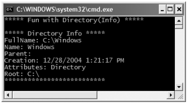
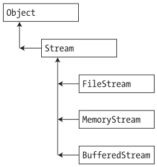
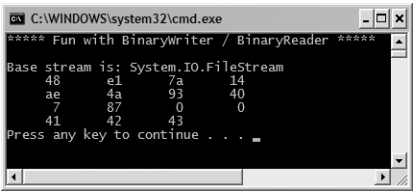
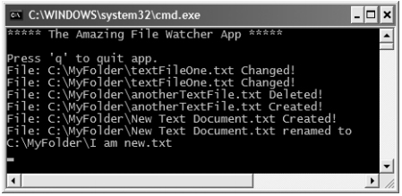

Chapter 16 - The System.IO namespace
Content
When you are creating full-blown desktop applications, the ability to save information between user sessions is imperative. This chapter examines a number of I/O-related topics as seen through the eyes of the .NET Framework.
The first order of business is to explore the core types defined in the System.IO namespace and come to understand how to programmatically modify a machine's directory and file structure.
Once you can do so, the next task is to explore various ways to read from and write to character-based, binary-based, string-based, and memory-based data stores.
Introduction to the System.IO namespace
In the framework of .NET, the System.IO namespace is the region of the base class libraries devoted to file-based (and memory-based) input and output (I/O) services.
Like any namespace, System.IO defines a set of classes, interfaces, enumerations, structures, and delegates, most of which are contained in mscorlib.dll.
In addition to the types contained within mscorlib.dll, the System.dll assembly defines additional members of the System.IO namespace.
Many of the types within the System.IO namespace focus on the programmatic manipulation of physical directories and files.
However, additional types provide support to read data from and write data to string buffers as well as raw memory locations.
Displaying information of a drive
The System.IO namespace contains a class named DriveInfo that provides numerous details of drive such as the drive type, available freespace, volume label, ...
Consider the following sample code:
class Program
{
static void Main(string[] args)
{
Console.Write("***** Fun with DriveInfo *****\n");
DriveInfo[] myDrives = DriveInfo.GetDrives();
foreach (DriveInfo d in myDrives)
{
Console.WriteLine("Name: {0}", d.Name);
Console.WriteLine("Type: {0}", d.DriveType);
if (d.IsReady)
{
Console.WriteLine("Free space: {0}", d.TotalFreeSpace);
Console.WriteLine("Format: {0}", d.DriveFormat);
Console.WriteLine("Label: {0}", d.VolumeLabel);
}
}
Console.ReadLine();
}
}
Here is the output based on my current machine.
Working with directories
.NET Framework libraries provide two classes are DirectoryInfo and DirectoryClass to manipulate with directories.
The DirectoryInfo class contains a set of members used for creating, moving, deleting, and enumerating over directories and subdirectories.
The below tables show the key members of this class.
| Create() |
Create a directory (or set of subdirectories), given a path name. |
| CreateSubdirectory() |
| Delete() |
Deletes a directory and all its contents. |
| GetDirectories() |
Returns an array of strings that represent all subdirectories in the current directory. |
| GetFiles() |
Retrieves an array of FileInfo types that represent a set of files in the given directory. |
| MoveTo() |
Moves a directory and its contents to a new path. |
| Parent |
Retrieves the parent directory of the specified path |
| Root |
Gets the root portion of a path |
The following example creates a new DirectoryInfo object mapped to C:\Windows and displays a number of interesting statistics.
class Program
{
static void Main(string[] args)
{
Console.WriteLine("***** Fun with Directory(Info) *****\n");
DirectoryInfo dir = new DirectoryInfo(@"C:\Windows");
Console.WriteLine("***** Directory Info *****");
Console.WriteLine("FullName: {0} ", dir.FullName);
Console.WriteLine("Name: {0} ", dir.Name);
Console.WriteLine("Parent: {0} ", dir.Parent);
Console.WriteLine("Creation: {0} ", dir.CreationTime);
Console.WriteLine("Attributes: {0} ", dir.Attributes);
Console.WriteLine("Root: {0} ", dir.Root);
Console.WriteLine("*************************************\n");
}
}
Here is the output based on my current machine.

Use the Directory class for typical operations such as copying, moving, renaming, creating, and deleting directories.
You can also use the Directory class to get and set DateTime information related to the creation, access, and writing of a directory.
Because all Directory methods are static, it might be more efficient to use a Directory method rather than a corresponding DirectoryInfo instance method
if you want to perform only one action. Most Directory methods require the path to the directory that you are manipulating.
The static methods of the Directory class perform security checks on all methods. If you are going to reuse an object several times, consider using the corresponding instance method of DirectoryInfo instead,
because the security check will not always be necessary.
Read members of Directory class in MSDN.
Displaying information of a file
To display information of a file, you can use the FileInfo class. This class allows you to obtain details regarding existing files on your hard drive (time created, size, file attributes, and so forth)
and aids in the creation, copying, moving, and destruction of files. The below table describes some core members of FileInfo class.
| AppendText() |
Creates a StreamWriter type (described later) that appends text to a file. |
| CopyTo() |
Copies an existing file to a new file |
| Create() |
Creates a new file and returns a FileStream type (described later) to interact with the newly created file. |
| CreateText() |
Creates a StreamWriter type that writes a new text file. |
| Delete() |
Deletes the file to which a FileInfo instance is bound. |
| Directory |
Gets an instance of the parent directory. |
| DirectoryName |
Gets the full path to the parent directory. |
| Length |
Gets the size of the current file or directory. |
| MoveTo() |
Moves a specified file to a new location, providing the option to specify a new filename. |
| Name |
Gets the name of the file. |
| Open() |
Opens a file with various read/write and sharing privileges. |
| OpenRead() |
Creates a read-only FileStream. |
| OpenText() |
Creates a StreamReader type (described later) that reads from an existing text file. |
| OpenWrite() |
Creates a write-only FileStream type. |
It is important to understand that amajority of the members of the FileInfo class return a specific I/O-centric object (FileStream, StreamWriter, and so forth) that
allows you to begin reading and writing data to (or reading from) the associated file in a variety of formats.
The FileInfo.Open() method
You can use the FileInfo.Open()method to open existing files as well as create new files with far more precision than FileInfo.Create().
Once the call to Open() completes, you are returned a FileStream object.
This version of the overloaded Open()method requires three parameters. The first parameter specifies the general flavor of the I/O request
(e.g., make a new file, open an existing file, append to a file, etc.), which is specified using the FileMode enumeration:
public enum FileMode
{
CreateNew,
Create,
Open,
OpenOrCreate,
Truncate,
Append
}
The second parameter, a value from the FileAccess enumeration, is used to determine the read/write behavior of the underlying stream:
public enum FileAccess
{
Read,
Write,
ReadWrite
}
Finally, you have the third parameter, FileShare, which specifies how the file is to be shared among other file handlers. Here are the core names:
public enum FileShare
{
None,
Read,
Write,
ReadWrite
}
The abstract Stream class
At this point, you have seen numerous ways to obtain FileStream, StreamReader, and StreamWriter objects, but you have yet to read data from, or written data to, a file using these types.
To understand how to do so, you'll need to become familiar with the concept of a stream. In the world of I/O manipulation, a stream represents a chunk of data.
Streams provide a common way to interact with a sequence of bytes, regardless of what kind of device (file, network connection, printer, etc.) is storing or displaying the bytes in question.
The abstract System.IO.Stream class defines a number of members that provide support for synchronous and asynchronous interactions with the storage medium
(e.g., an underlying file or memory location). The below figure shows a few descendents of the Stream type.

Reads core members of the Stream class at page 532 of textbook.
Working with StreamWriters and StreamReaders
The StreamWriter and StreamReader classes are useful whenever you need to read or write character-based data (e.g., strings). Both of these types work by default with Unicode characters;
however, you can change this by supplying a properly configured System.Text.Encoding object reference. To keep things simple, let's assume that the default Unicode encoding fits the bill.
Writing to a Text file
The following example creates a new file named reminders.txt using the File.CreateText() method.
static void Main(string[] args)
{
Console.WriteLine("***** Fun with StreamWriter / StreamReader *****\n");
StreamWriter writer = File.CreateText("reminders.txt");
writer.WriteLine("Don't forget Mother's Day this year...");
writer.WriteLine("Don't forget Father's Day this year...");
writer.WriteLine("Don't forget these numbers:");
for(int i = 0; i < 10; i++)
writer.Write(i + " ");
writer.Write(writer.NewLine);
writer.Close();
Console.WriteLine("Created file and wrote some thoughts...");
}
Reading from a Text file
The following example reads reminders.txt file that was created in above example.
static void Main(string[] args)
{
Console.WriteLine("***** Fun with StreamWriter / StreamReader *****\n");
Console.WriteLine("Here are your thoughts:\n");
StreamReader sr = File.OpenText("reminders.txt");
string input = null;
while ((input = sr.ReadLine()) != null)
{
Console.WriteLine (input);
}
}
Working with BinaryWrites and BinaryReaders
These types allow you to read and write discrete data types to an underlying stream in a compact binary format. The BinaryWriter class defines a highly overloaded Write()method to place a data type in the underlying stream.
In addition to Write(), BinaryWriter provides additional members that allow you to get or set the Stream-derived type and offers support for random access to the data.
The following example writes a number of data types to a new *.dat file:
static void Main(string[] args)
{
FileInfo f = new FileInfo("BinFile.dat");
BinaryWriter bw = new BinaryWriter(f.OpenWrite());
Console.WriteLine("Base stream is: {0}", bw.BaseStream);
double aDouble = 1234.67;
int anInt = 34567;
char[] aCharArray = { 'A', 'B', 'C' };
bw.Write(aDouble);
bw.Write(anInt);
bw.Write(aCharArray);
bw.Close();
}
To read the data out of the BinFile.dat file, the BinaryReader type provides a number of options. Here, you will make use of PeekChar() to determine if the stream still has data to provide and,
if so, use ReadByte() to obtain the value. Note that you are formatting the bytes in hexadecimal and inserting seven spaces between each:
static void Main(string[] args)
{
FileInfo f = new FileInfo("BinFile.dat");
BinaryReader br = new BinaryReader(f.OpenRead());
int temp = 0;
while (br.PeekChar() != -1)
{
Console.Write("{0,7:x} ", br.ReadByte());
if (++temp == 4)
{
Console.WriteLine();
temp = 0;
}
}
Console.WriteLine();
}
The output of this program appears in below figure.

Programmatically "Watching" files
Now that you have a better handle on the use of various readers and writers, next you'll look at the role of the FileSystemWatcher class.
This type can be quite helpful when you wish to programmatically monitor (or "watch") files on your system.
Specifically, the FileSystemWatcher type can be instructed to monitor files for any of the actions specified by the NotifyFilters enumeration:
public enum System.IO.NotifyFilters
{
Attributes, CreationTime,
DirectoryName, FileName,
LastAccess, LastWrite,
Security, Size,
}
The first step you will need to take to work with the FileSystemWatcher type is to set the Path property to specify the name (and location) of the directory that contains the files to be monitored,
as well as the Filter property that defines the file extensions of the files to be monitored.
To illustrate the process of watching a file, assume you have created a new directory on your C drive named MyFolder that contains various *.txt files (named whatever you wish).
The following console application will monitor the *.txt files within the MyFolder and print out messages in the event that the files are created, deleted, modified, or renamed.
static void Main(string[] args)
{
Console.WriteLine("***** The Amazing File Watcher App *****\n");
FileSystemWatcher watcher = new FileSystemWatcher();
try
{
watcher.Path = @"C:\MyFolder";
}
catch (ArgumentException ex)
{
Console.WriteLine(ex.Message);
return;
}
watcher.NotifyFilter = NotifyFilters.LastAccess
| NotifyFilters.LastWrite
| NotifyFilters.FileName
| NotifyFilters.DirectoryName;
watcher.Filter = "*.txt";
watcher.Changed += new FileSystemEventHandler(OnChanged);
watcher.Created += new FileSystemEventHandler(OnChanged);
watcher.Deleted += new FileSystemEventHandler(OnChanged);
watcher.Renamed += new RenamedEventHandler(OnRenamed);
watcher.EnableRaisingEvents = true;
Console.WriteLine(@"Press 'q' to quit app.");
while (Console.Read()!='q');
}
The two event handlers simply print out the current file modification:
static void OnChanged(object source, FileSystemEventArgs e)
{
Console.WriteLine("File: {0} {1}!", e.FullPath, e.ChangeType);
}
static void OnRenamed(object source, RenamedEventArgs e)
{
Console.WriteLine("File: {0} renamed to\n{1}", e.OldFullPath, e.FullPath);
}
To test this program, run the application and open Windows Explorer. Try renaming your files, creating a *.txt file, deleting a *.txt file, or whatnot.
You will see the console application print out various bits of information regarding the state of the text files within MyFolder.

Summary
This chapter began by examining the use of the Directory(Info) and File(Info) types (including several new members of the File type brought about with .NET 2.0).
As you learned, these classes allow you to manipulate a physical file or directory on your hard drive. Next, you examined a number of types derived from the abstract Stream class,
specifically FileStream. Given that Stream-derived types operate on a raw stream of bytes, the System.IO namespace provides numerous reader/writer types
(StreamWriter, StringWriter, BinaryWriter, etc.) that simplify the process.
Along the way, you also checked out a new I/O-centric type provided by .NET 2.0 (DriveType), and you learned how to monitor files using the FileSystemWatcher type and how to interact with streams in an asynchronous manner.